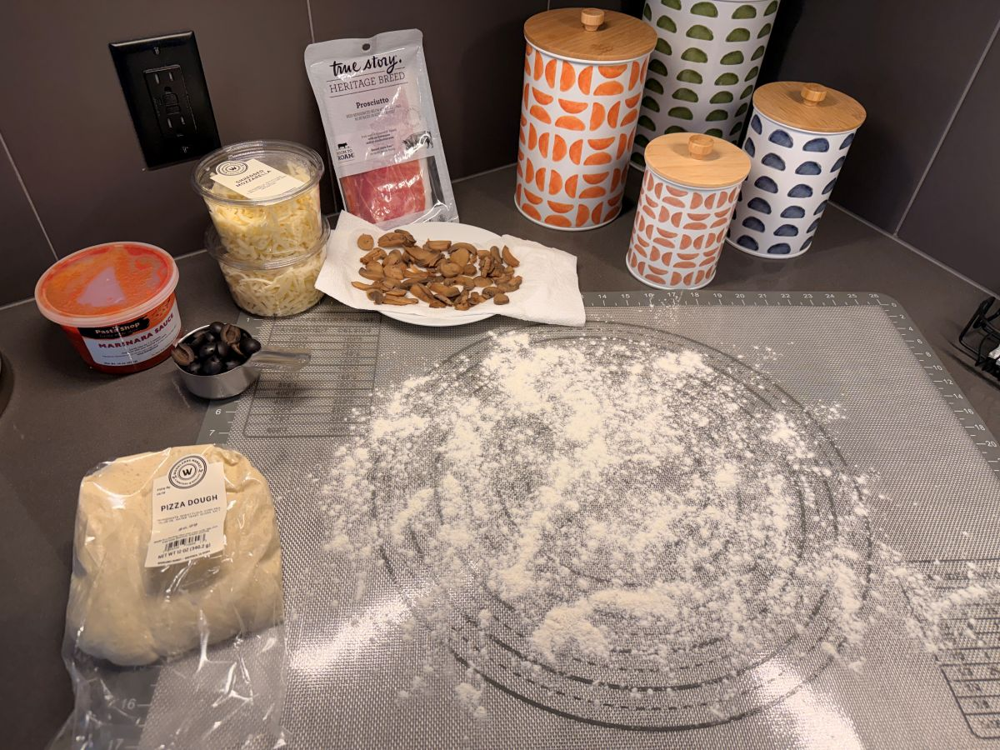
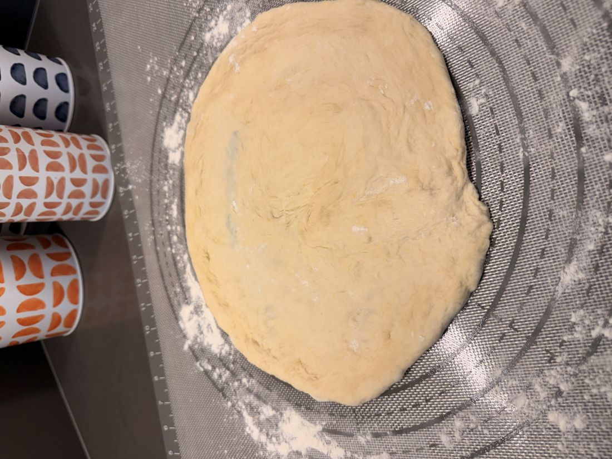
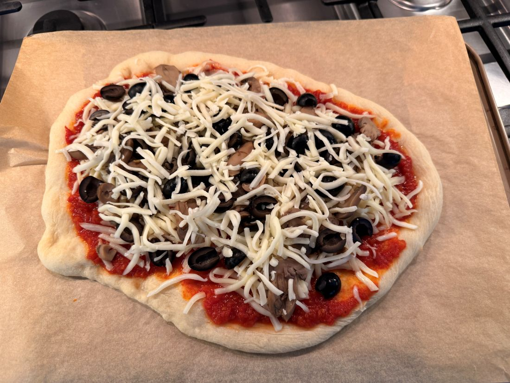
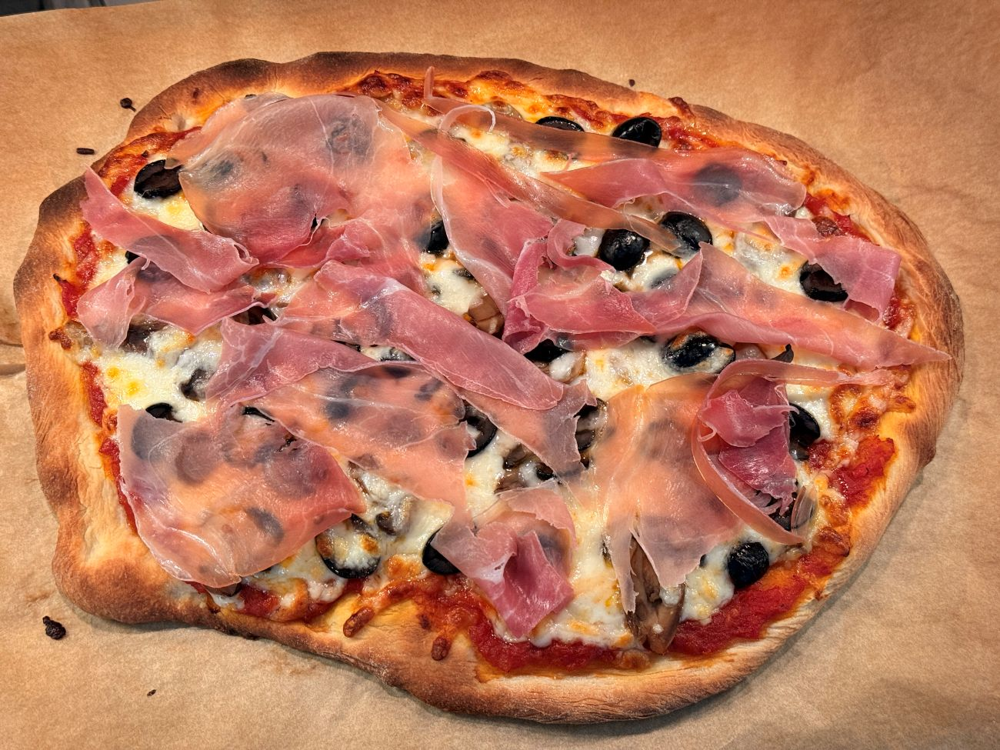

It starts with a sudden, unprompted urge—the kind of culinary itch that hits late on a Friday afternoon. Let’s make pizza tonight. From scratch.
In theory, it’s a romantic notion. In practice, you haven’t thought it through. There are no poolish starters fermenting in the fridge, the bag of imported Italian Tipo 00 flour sits unopened, and there isn't a pizza stone in sight. True scratch-cooking requires a timeline we simply didn’t have.
But when an obsession takes hold, you commit.
Turning away from perfectionism, we headed to our local grocery store. No specialty Italian markets, just the standard deli counter. And there it was: a humble, plastic-wrapped ball of fresh commercial dough. No, it wasn't wild-yeast heritage flour, but it was alive, it was ready, and it meant we were having pizza.
Back home, using nothing more than a standard upside-down cookie sheet preheated to an aggressive 500°F, we coaxed that grocery-store dough into one of the best casual dinners we've had in months. It turns out, the rhythm of a home-cooked meal doesn't always require meticulous planning—sometimes, it just requires a little resourcefulness and a very hot oven.
Embracing the Spontaneous Rhythm
This approach crosses directly into our Rhythm pillar—a reminder that living intentionally means meet the moment where it stands, rather than waiting for flawless circumstances.
Pizza Night for Two — Cookie Sheet Method
An accessible, high-heat method designed for standard kitchen equipment.
Ingredients
- 1 fresh pizza dough ball (store-bought or deli counter)
- 1/2 cup marinara sauce
- 6 oz fresh mozzarella, torn or sliced
- 1 1/2 cups mushrooms, thinly sliced
- 1/3 cup black olives, pitted and halved
- 3 slices prosciutto (added after baking)
- 2 1/2 tbsp olive oil (divided)
- 1/2 tsp kosher salt
- 1/4 tsp black pepper

Timeline at a Glance
- 0:00 — Dough out of fridge
- 0:05 — Oven and cookie sheet on to preheat
- 0:24 — Saute mushrooms
- 0:30 — Stretch dough
- 0:35 — Par-bake bare crust
- 0:39 — Load toppings
- 0:42 — Final bake
- 0:50 — Add prosciutto, rest, slice, eat!
Step-by-Step Instructions
- 1. Rest Dough (30 min): Remove the dough from the refrigerator. Cover it with a damp kitchen towel and allow it to rest at room temperature. Cold dough snaps back and tears easily; giving it time to lose its chill allows the gluten to relax so it stretches effortlessly.
- 2. Preheat Oven & Cookie Sheet (25 min): At the 5-minute mark of your dough rest, take a standard rimmed metal cookie sheet and flip it completely upside down on the lowest rack of your oven. Turn the oven to 500°F and let it preheat thoroughly. The inverted sheet will trap heat and mimic a traditional baking stone.
- 3. Saute Mushrooms (6 min): Heat 1 tablespoon of olive oil in a skillet over medium-high heat. Lay the sliced mushrooms in a single layer—do not stir them for the first 3 minutes to allow a deep crust to form. Toss gently, season with kosher salt and black pepper, and cook for another 2–3 minutes until deeply golden. Set aside.
-
4. Stretch Dough (5 min):
On a lightly floured countertop or cutting board, use your hands to press and stretch the dough out into a rough 12-inch circle or oval. Step away from the rolling pin, as it presses out the essential air pockets. Carefully lay your stretched crust flat onto a sheet of parchment paper.

- 5. Par-Bake Bare Crust (3–4 min): Brush the surface of the bare dough lightly with olive oil. Using a wooden board or the back of another pan, slide the parchment paper along with the dough directly onto the preheated, upside-down cookie sheet inside the oven. Bake at 500°F until the crust is just set and barely pale, then pull it out and quickly close the oven door.
-
6. Load Toppings (3 min):
Spread the marinara sauce evenly across the par-baked crust, leaving a clean 1-inch border for the handle. Uniformly distribute your sauteed mushrooms and halved black olives, then dot the top with the pieces of fresh mozzarella. Finish with a quick, light drizzle of olive oil.

- 7. Final Bake (7–8 min): Slide the loaded pizza back onto the hot cookie sheet in the oven. Bake at 500°F until the crust turns a rich, deep golden brown and the mozzarella is completely melted, bubbling, and blistered with dark spots. Keep a very close eye on it during the final 2 minutes.
- 8. Add Prosciutto & Rest (3 min): Pull the pizza from the oven. While it is screeching hot, immediately drape your three slices of prosciutto across the top—the residual heat will melt the fat perfectly into the cheese. Let the pizza rest untouched for 2–3 minutes to let the structural layers set.
-
9. Slice & Serve:
Using a sharp wheel or kitchen shears, cut into 6–8 slices and enjoy immediately while the crust is crisp and hot.

Important Reminders for Success:
• Prosciutto timing is everything: Always lay the prosciutto on after baking. Oven heat cooks it into tough, salty leather; adding it fresh at the end preserves its silkiness.
• The hot sheet secret: Preheating that upside-down metal cookie sheet is what instantly transfers intense heat to the base, crisping up the bottom crust so it stays structurally sound.
• Be patient with elasticity: If the dough stubborn-bakes and keeps shrinking back while you are stretching it, walk away. Let it rest for 5 more minutes to relax the gluten, then try again.